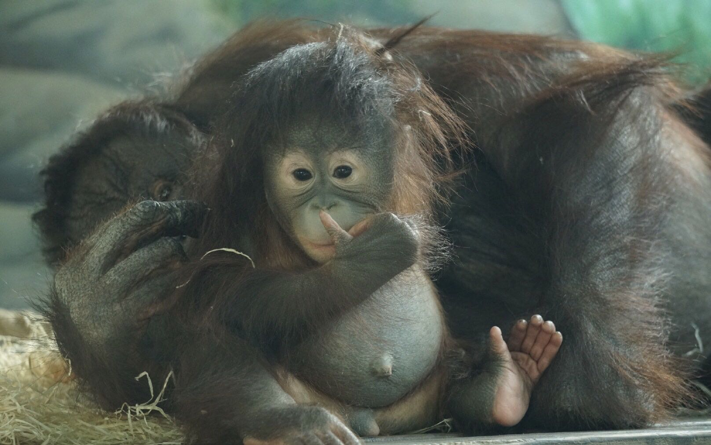
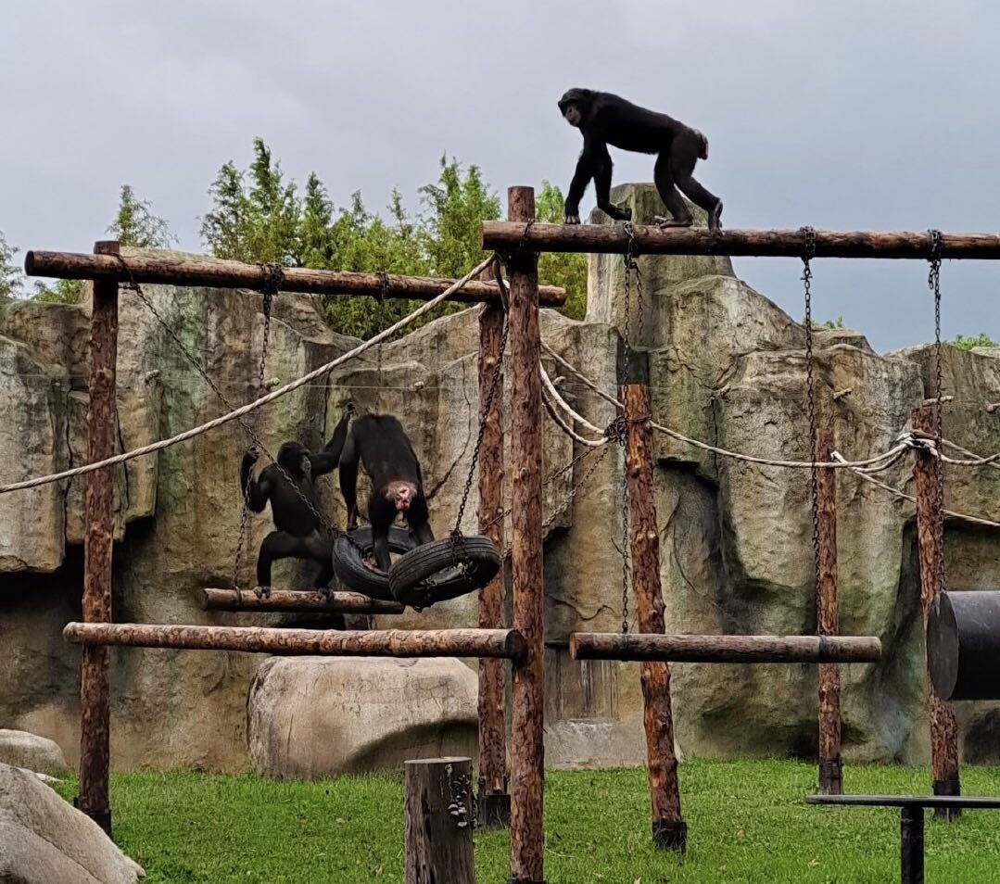
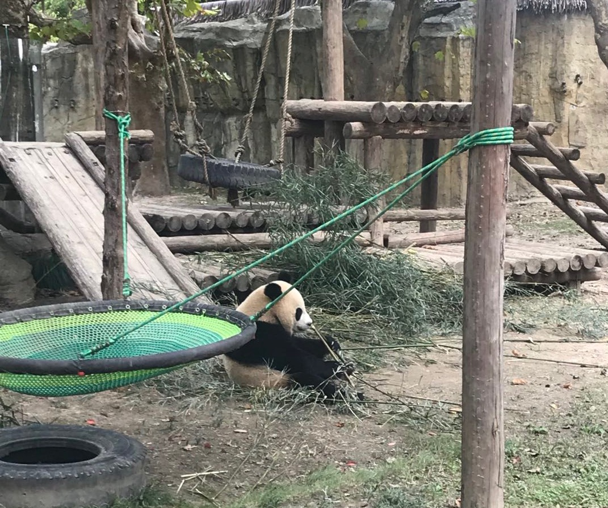
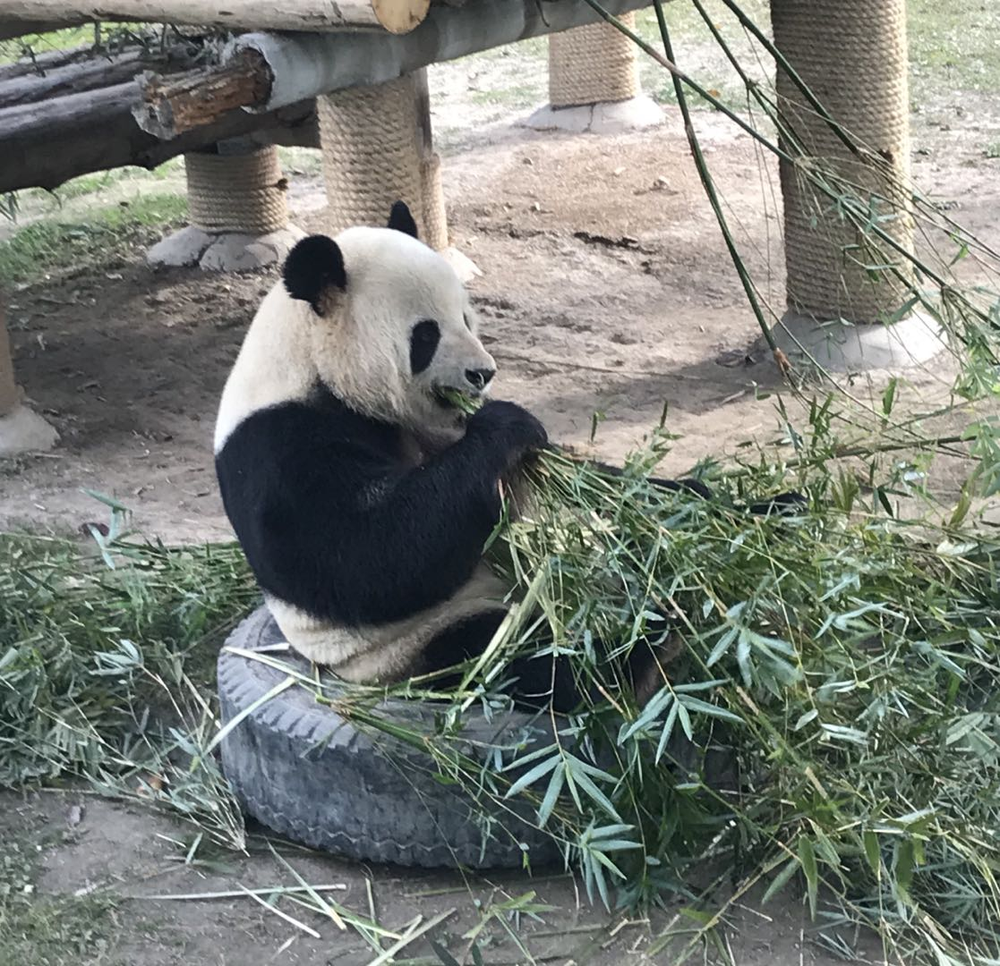
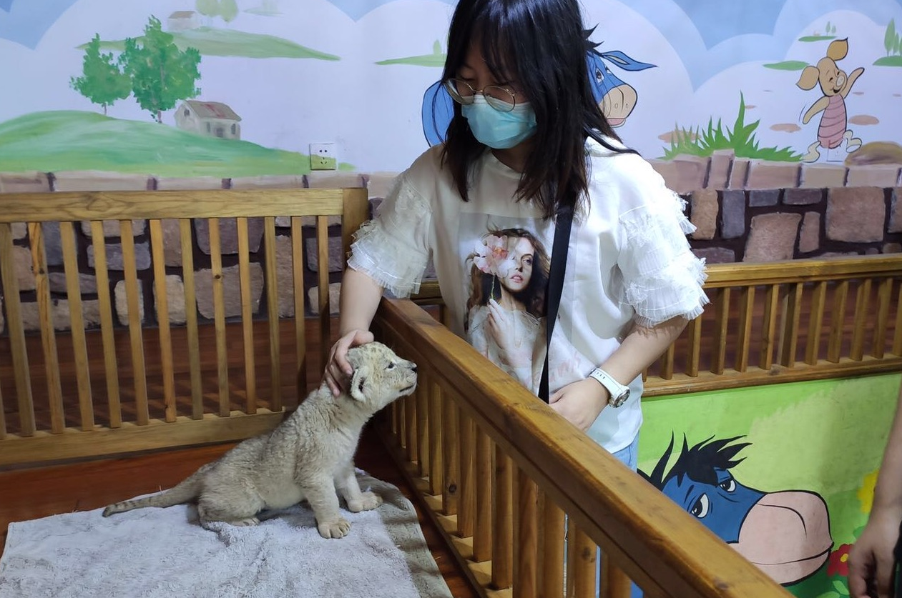
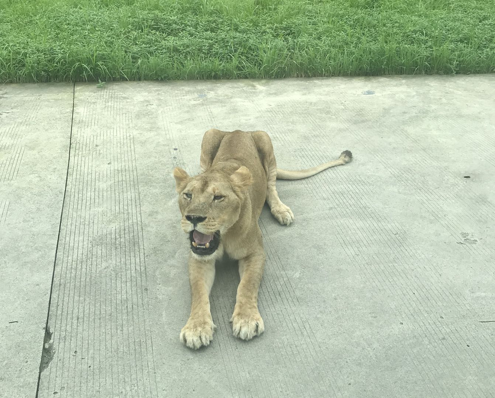
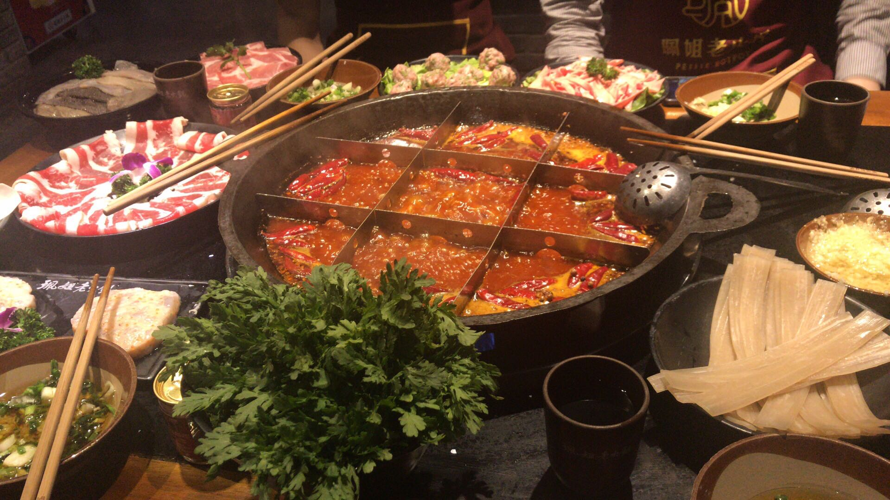
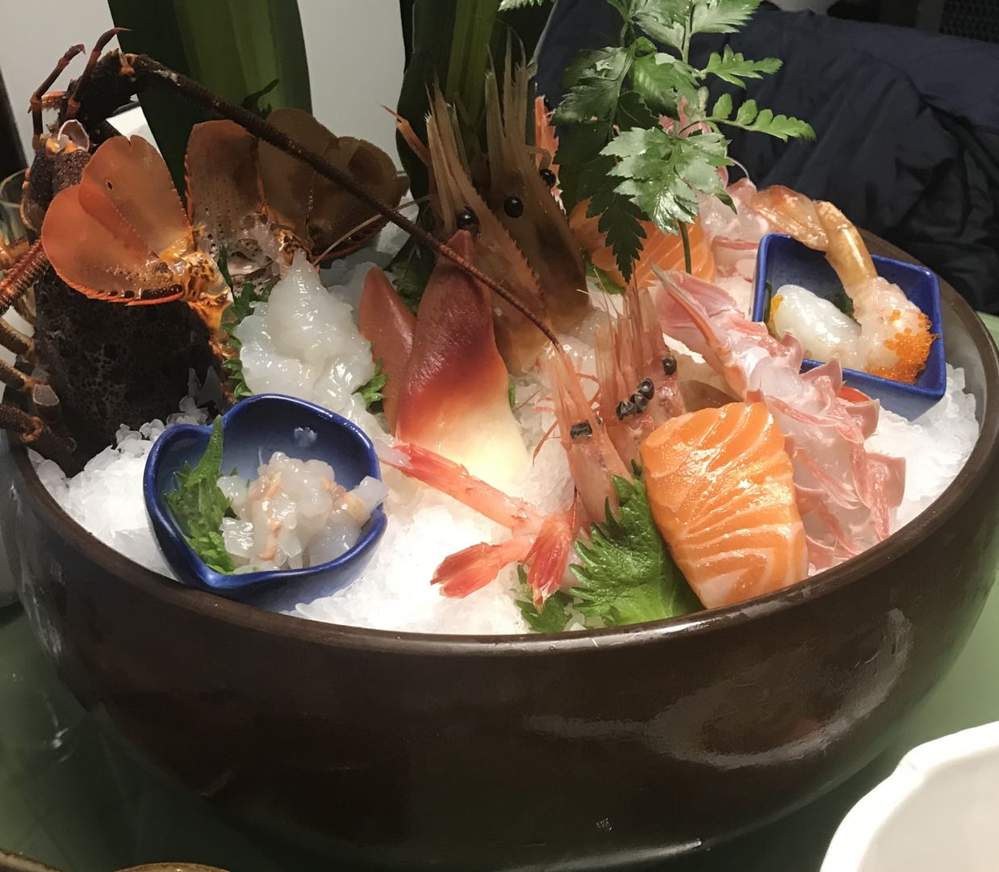
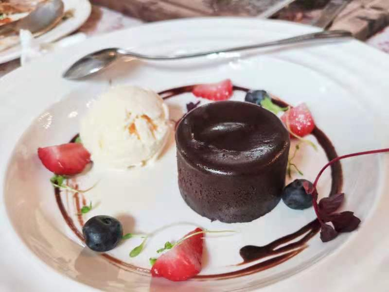

My favorite place
My favorite place is zoo! I like animals very much!
I love orangutans, monkeys best. They are primates so they are very familiar to our human beings. I can always see monkeys mothers with a monkey baby in their arms, sharing food with their babies. I also see a orangutans family lying together, enjoying their afternoon.
 I also love pandas. They are national treatures of China. Every time I see them, they are sitting and eating, in a very comfortable way, with a huge bunch of bamboos in front of them.
 I like lion too. They are strong and beautiful. I have even touched a baby lion. It is so cute!
 My favorite food
I love eating! I like Chongqing hot pot, Japanese sashimi and chocolate cakes best.
Chongqing hot pot is spicy but delicious. It is a great joy to eat it with friends.
Japanese Sashima is the most characteristic food in Japanese cuisine. With only soy sauce and mustard as the seasoner, the fresh taste of fish is protected.
Although chocolate is not attractive to me, I love chocalate cakes very much as it counteracts the bitterness of chocolate.
